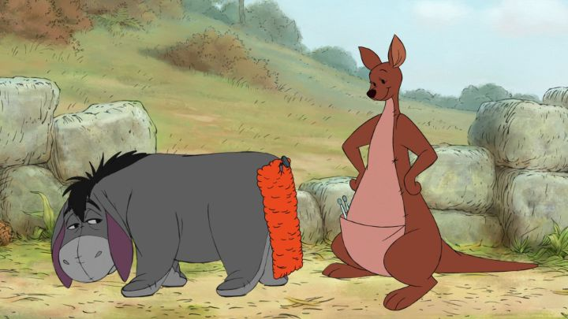

People often mistake 2009's "The Princess and the Frog" as being Walt Disney Studios' last 2D feature film, before exclusively producing 3D CGI animation. But there was one more: "Winnie the Pooh" in 2011. Since it's the very last, it has an important place in my heart, even if it's about characters I've seen several times before.The choices behind "Winnie the Pooh" also make it clear that the studio was setting up the 2D medium to fail, to further justify axing that department. Pooh had several other movies and television projects, including a few successful theatrical movies by the TV division. But he's appeared so often that it's hard to justify a new movie, especially a "reboot," as an exciting, must-see project, and there was little opportunity to make it a spectacle. The movie was also released in theaters in the exact same week as the eighth and final "Harry Potter" movie, the finale to a series nearly a decade in the making. While this allowed for some clever marketing, it was obvious that audiences would not be seeing Pooh on its opening weekend. It was doomed to fail from the start. But as a teenager, and being aware that this probably would be Disney's last 2D film, I DID see the movie in theaters on its opening weekend. My family wasn't interested, but my Dad agreed to take me and sit through it. We passed by a massive line of people waiting to enter a sold out "Potter" screening, and sat in a nearly empty theater, perhaps only a dozen viewers in total, all adults. We sat through the lean hour-long movie. And we laughed. My Dad remarked that the jokes and puns were actually quite clever, such that even a grown man could enjoy it. At the end, the small audience walked out togehter, praising the movie and how happy we were to have seen it instead of the other film. If you're a long-time Pooh fan, you might be concerned about whether 2011's "Winnie" modernizes the characters in some way that ruins their nostalgia and timelessness. Or you might wonder how exactly the movie intended to "refresh" the franchise, after some more serious movies that seemed to expand emotional developments as far as they could go. Like the original 1977 movie, "Winnie" returns to using a live-action storybook and narrator breaking the fourth wall with the characters, an effective motif that hasn't been used since then. The characters are a little more energetic than before to keep a modern child's attention, and there are some quick references to modern pop culture, but these jokes are quick and inconsequential enough to ignore. And Zoey Deschanel sinsg a lot of the songs, giving a more modern and sweet pop sense over the old choirs; she's appropriate, but may not fit everyone's preference.Pooh, Piglet, Tigger, Rabbit, Eeyore, Kanga and Roo, and Owl are all present and much as you'd remember them. Also a red balloon, which is almost a character on its own. The only character that received a drastic change is Christopher Robin himself, getting a more modern cartoon design over his traditional, rotoscoped self. He's a little off, but he isn't too distracting.This time, there are multiple stories like the 1977 movie, but they're weaved more organically to present the larger whole. We start with Pooh's rumbly tummy hungering for honey, and so he goes off to find friends who might share some. He meets Eeyore, and notices that his tail is missing (yet again), so we get a second plot thread revolving around a contest to find the best replacement (for example, a balloon, or a spring, or a scarf). At some point, Christopher Robin has to go for a while, and leaves behind a note, which Owl misreads as mentioning the "Backson," a horrible monster that everyone makes up on the spot. So everyone prepares to catch the Backson to rescue Christopher, when of course, the note really said "back soon." All three plots don't get resolved until the very end, tied up in a nice little bow.  I can't emphasize how remarkably clever "Winnie the Pooh's" writing is. Despite Pooh frequently being the one with very little brain in the group, he;s the one that ultimately fixes all the stories in the end, including one moment of personal growth that shows how much he cares about his friends. And there are frequent word puns and misunderstandings that would even make an adult laugh. Some of the so-quick-you-miss-them visual gags are a bit off in their timing, though. The general impression I got was that this was a movie clearly written by older adults that grew up with the characters, writing the movie to be intended for children, but sometimes adding things that made adults laugh first rather than kids. That's a good thing in some ways, but it doesn't feel quite as pure as the original movie.Watching this back-to-back after the 1977 movie also emphasized the differences in acting and animation. Of course, all the actors have long since died, and most of the characters basically sound close enough, especially Jim Cummings' fantastic version of Pooh and Tigger. Owl, voiced by Craig Ferguson, probably sounds the most different among the animals, but I'm a fan of Craig and thought the more manic performance suited the movie well (in prior movies, Owl was more like a wise teacher that frequently made mistakes, and here he's more of a self-proclaimed important genius). Again, it's Christopher's design and voice that is the most drastic change, for better or for worse. And John Cleese as the narrator was a perfect idea, and he suits the role nicely. Instead of the scratchy Xerox-copier style of the 1977 movie, 2011's "Winnie the Pooh" is animated digitally, so it looks as clean as the characters ever have. It's all clean and smooth, perhaps slightly better than their other recent theatrical movies (handled by the secondary TV team), but not drastically impressive. After all, there's only so much you can do with Pooh. And the older pencil-sketch style suited the characters a little better by comparison. There's a bunch of fun songs, including one or two that might be as memorable as those in the original movie (Tigger's "It's Gonna Be Great" sticks out for me as a good one). 2011's "Winnie the Pooh" isn't very ambitious, and I'm conflicted about whether this was the best way to send off 2D animation in American film production. But when I saw this for the first time in a theater, I distinctly remember crying a little, partly for the love of the characters I grew up with, and for the medium I grew up with, knowing this might be the last time I see either like this. The executives at Disney were probably eager to see this movie fail, but the artists did their best to give a positive goodbye. (As an aside, the Bluray was released just when Disney was starting to output that format, and it's near-impossible to find a Bluray-sized case for the combo-pack: they tried releasing combo-packs in DVD cases to fit with existing DVD collections. I hope there'll be a re-release one day, but considering how poorly the theatrical release was treated, I doubt it.)
- "Ani" More reviews can be found at : https://2danicritic.github.io/ Previous review: review_Windy_Tales Next review: review_Wizard_Barristers